2022 Higher Chemistry - Paper 1 questions
Source: Scottish Qualifications Authority (SQA) / Qualifications Scotland. This is a StemInteract HTML companion, not an official HTML edition. Selectable text is supplied alongside original page images. Use the images or original PDF for equations, powers, fractions, vector notation, tables and diagrams; text extraction cannot fully preserve mathematical layout.
Jump to a question
PDF page 1
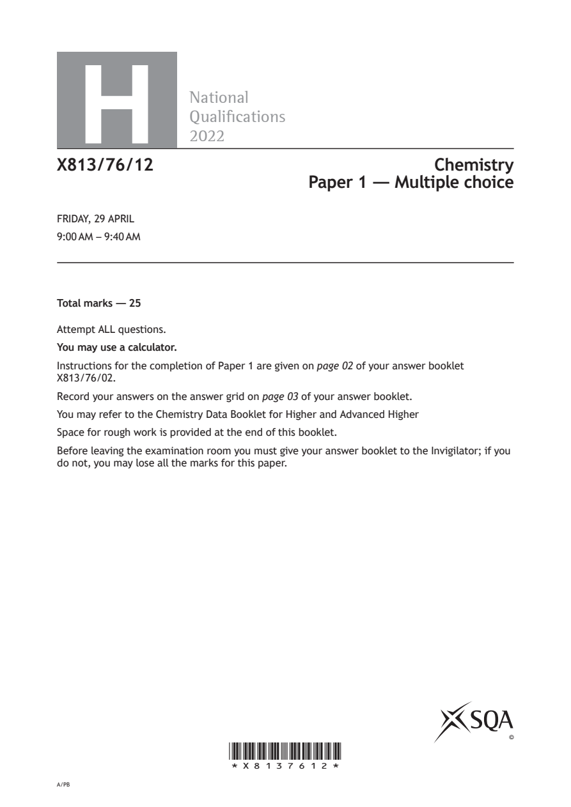
Selectable page text
H
National
Qualications
2022
X813/76/12 Chemistry
Paper 1 — Multiple choice
FRIDAY, 29 APRIL
9:00 AM – 9:40 AM
Total marks — 25
Attempt ALL questions.
You may use a calculator.
Instructions for the completion of Paper 1 are given on page 02 of your answer booklet
X813/76/02.
Record your answers on the answer grid on page 03 of your answer booklet.
You may refer to the Chemistry Data Booklet for Higher and Advanced Higher
Space for rough work is provided at the end of this booklet.
Before leaving the examination room you must give your answer booklet to the Invigilator; if you
do not, you may lose all the marks for this paper.
©
*X8137612*
A/PBPDF page 2
Paper 1, Question 1Paper 1, Question 2Paper 1, Question 3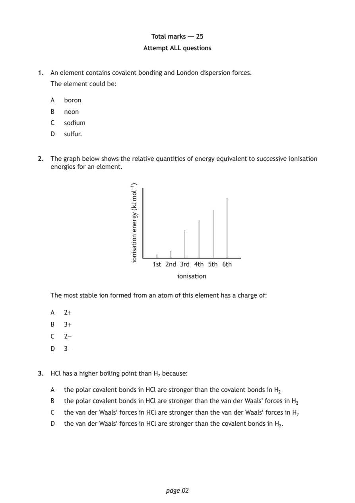
Selectable page text
Total marks — 25
Attempt ALL questions
1. An element contains covalent bonding and London dispersion forces.
The element could be:
A boron
B neon
C sodium
D sulfur.
2. The graph below shows the relative quantities of energy equivalent to successive ionisation
energies for an element.
1st 2nd 3rd 4th 5th 6th
ionisation
page 02
)1−lom
Jk(
ygrene
noitasinoi
The most stable ion formed from an atom of this element has a charge of:
A 2+
B 3+
C 2−
D 3−
3. HCl has a higher boiling point than H₂ because:
A the polar covalent bonds in HCl are stronger than the covalent bonds in H₂
B the polar covalent bonds in HCl are stronger than the van der Waals’ forces in H₂
C the van der Waals’ forces in HCl are stronger than the van der Waals’ forces in H₂
D the van der Waals’ forces in HCl are stronger than the covalent bonds in H₂.PDF page 3
Paper 1, Question 4Paper 1, Question 5Paper 1, Question 6Paper 1, Question 7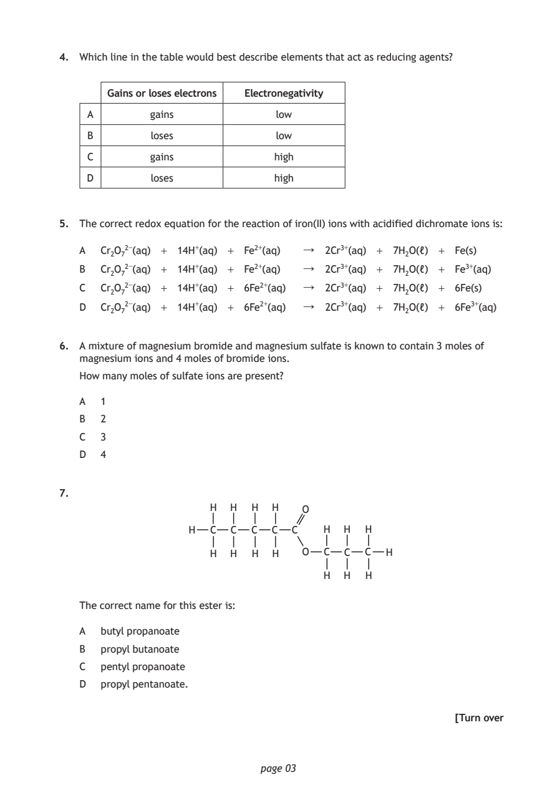
Selectable page text
4. Which line in the table would best describe elements that act as reducing agents?
Gains or loses electrons Electronegativity
A gains low
B loses low
C gains high
D loses high
5. The correct redox equation for the reaction of iron(II) ions with acidified dichromate ions is:
A Cr₂O₇²⁻(aq) + 14H⁺(aq) + Fe²⁺(aq) ↓ 2Cr³⁺(aq) + 7Η₂Ο(ℓ) + Fe(s)
B Cr₂O₇²⁻(aq) + 14H⁺(aq) + Fe²⁺(aq) ↓ 2Cr³⁺(aq) + 7H₂O(ℓ) + Fe³⁺(aq)
C Cr₂O₇²⁻(aq) + 14H⁺(aq) + 6Fe²⁺(aq) ↓ 2Cr³⁺(aq) + 7H₂O(ℓ) + 6Fe(s)
D Cr₂O₇²⁻(aq) + 14H⁺(aq) + 6Fe²⁺(aq) ↓ 2Cr³⁺(aq) + 7H₂O(ℓ) + 6Fe³⁺(aq)
6. A mixture of magnesium bromide and magnesium sulfate is known to contain 3 moles of
magnesium ions and 4 moles of bromide ions.
How many moles of sulfate ions are present?
A 1
B 2
C 3
D 4
7.
H H H H O
H C C C C C H H H
H H H H O C C C H
H H H
The correct name for this ester is:
A butyl propanoate
B propyl butanoate
C pentyl propanoate
D propyl pentanoate.
[Turn over
page 03PDF page 4
Paper 1, Question 8Paper 1, Question 9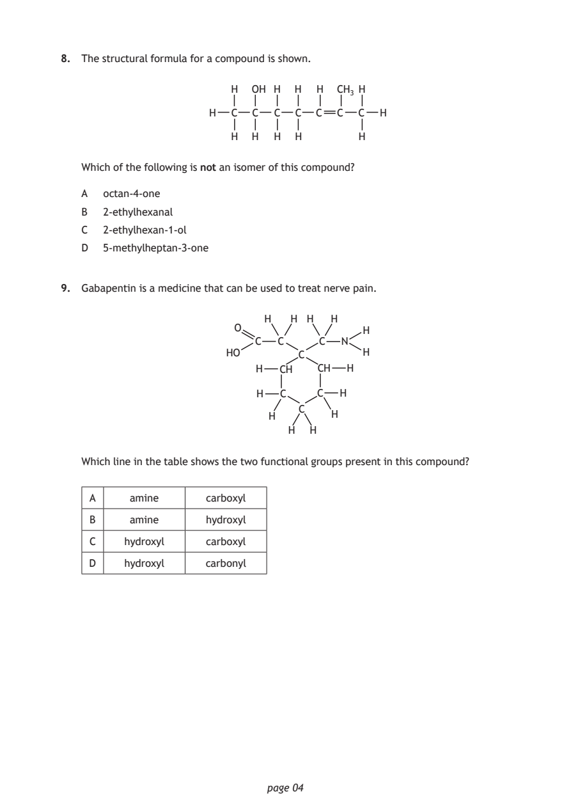
Selectable page text
8. The structural formula for a compound is shown.
H OH H H H CH₃ H
H C C C C C C C H
H H H H H
Which of the following is not an isomer of this compound?
A octan-4-one
B 2-ethylhexanal
C 2-ethylhexan-1-ol
D 5-methylheptan-3-one
9. Gabapentin is a medicine that can be used to treat nerve pain.
H H H H
O
C C C N
HO C H
H CH CH H
H C C H
C
H H
H H
page 04
H
Which line in the table shows the two functional groups present in this compound?
A amine carboxyl
B amine hydroxyl
C hydroxyl carboxyl
D hydroxyl carbonylPDF page 5
Paper 1, Question 10Paper 1, Question 11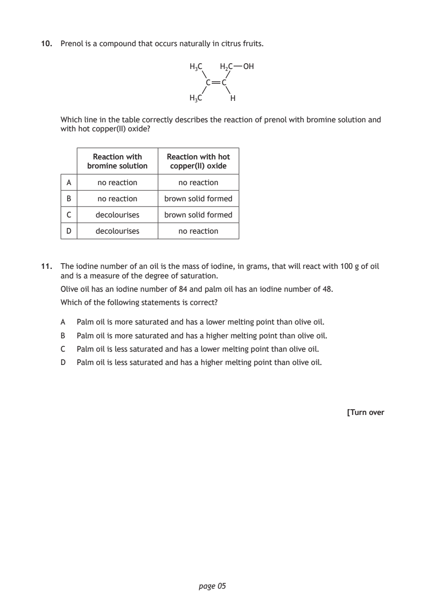
Selectable page text
10. Prenol is a compound that occurs naturally in citrus fruits.
H₃C H₂C OH
C C
H₃C H
Which line in the table correctly describes the reaction of prenol with bromine solution and
with hot copper(II) oxide?
Reaction with Reaction with hot
bromine solution copper(II) oxide
A no reaction no reaction
B no reaction brown solid formed
C decolourises brown solid formed
D decolourises no reaction
11. The iodine number of an oil is the mass of iodine, in grams, that will react with 100 g of oil
and is a measure of the degree of saturation.
Olive oil has an iodine number of 84 and palm oil has an iodine number of 48.
Which of the following statements is correct?
A Palm oil is more saturated and has a lower melting point than olive oil.
B Palm oil is more saturated and has a higher melting point than olive oil.
C Palm oil is less saturated and has a lower melting point than olive oil.
D Palm oil is less saturated and has a higher melting point than olive oil.
[Turn over
page 05PDF page 6
Paper 1, Question 12Paper 1, Question 13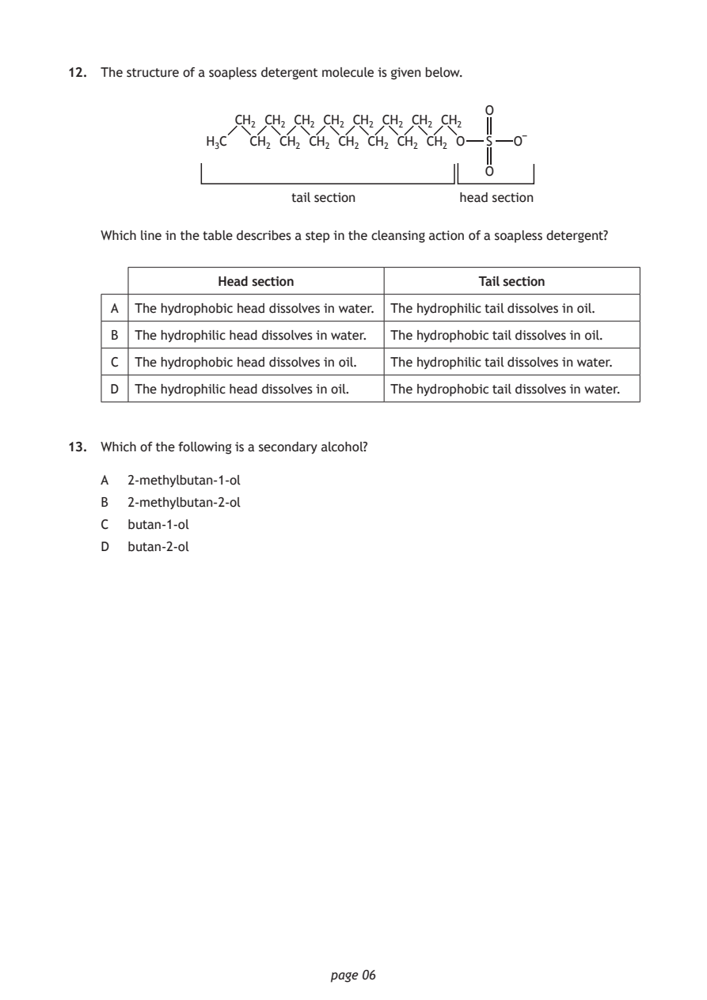
Selectable page text
12. The structure of a soapless detergent molecule is given below.
O
CH₂ CH₂ CH₂ CH₂ CH₂ CH₂ CH₂ CH₂
H₃C CH₂ CH₂ CH₂ CH₂ CH₂ CH₂ CH₂ O S O
O
tail section head section
Which line in the table describes a step in the cleansing action of a soapless detergent?
Head section Tail section
A The hydrophobic head dissolves in water. The hydrophilic tail dissolves in oil.
B The hydrophilic head dissolves in water. The hydrophobic tail dissolves in oil.
C The hydrophobic head dissolves in oil. The hydrophilic tail dissolves in water.
D The hydrophilic head dissolves in oil. The hydrophobic tail dissolves in water.
13. Which of the following is a secondary alcohol?
A 2-methylbutan-1-ol
B 2-methylbutan-2-ol
C butan-1-ol
D butan-2-ol
page 06PDF page 7
Paper 1, Question 14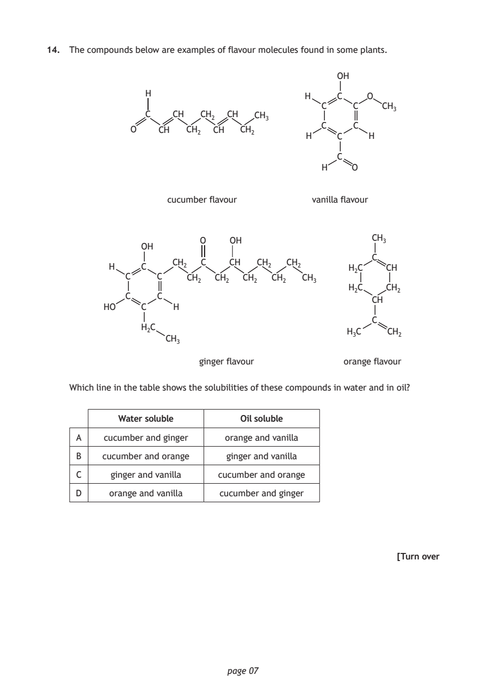
Selectable page text
14. The compounds below are examples of flavour molecules found in some plants.
OH
H
H C O
C C CH₃
C CH CH₂ CH CH₃
C C
O CH CH₂ CH CH₂
H C H
C
H O
cucumber flavour vanilla flavour
CH₃
O OH
OH
C
CH₂ C CH CH₂ CH₂
H C H₂C CH
C C CH₂ CH₂ CH₂ CH₂ CH₃
H₂C CH₂
C C
CH
HO C H
C
H₂C
H₃C CH₂
CH₃
ginger flavour orange flavour
Which line in the table shows the solubilities of these compounds in water and in oil?
Water soluble Oil soluble
A cucumber and ginger orange and vanilla
B cucumber and orange ginger and vanilla
C ginger and vanilla cucumber and orange
D orange and vanilla cucumber and ginger
[Turn over
page 07PDF page 8
Paper 1, Question 15Paper 1, Question 16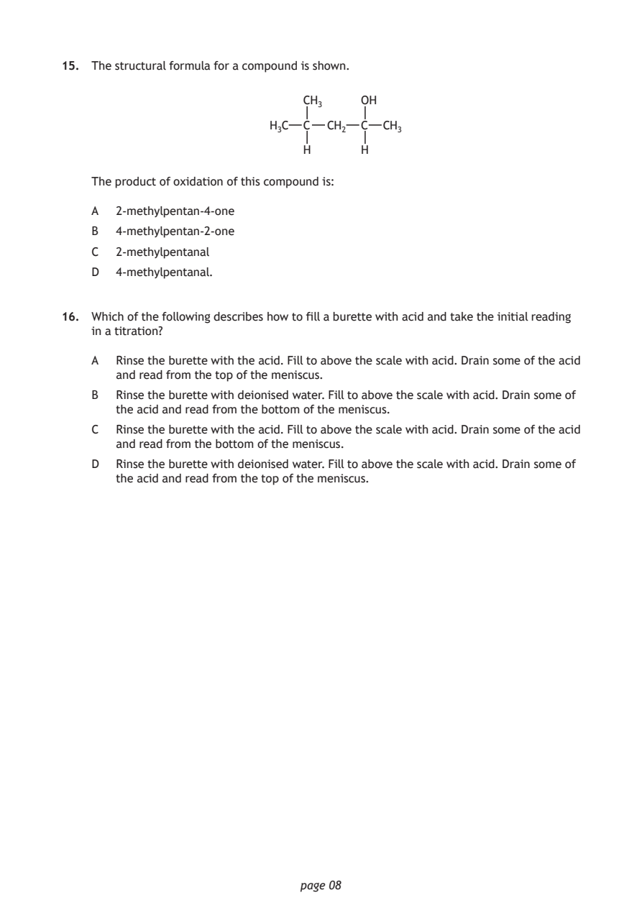
Selectable page text
15. The structural formula for a compound is shown.
CH₃ OH
H₃C C CH₂ C CH₃
H H
The product of oxidation of this compound is:
A 2-methylpentan-4-one
B 4-methylpentan-2-one
C 2-methylpentanal
D 4-methylpentanal.
16. Which of the following describes how to fill a burette with acid and take the initial reading
in a titration?
A Rinse the burette with the acid. Fill to above the scale with acid. Drain some of the acid
and read from the top of the meniscus.
B Rinse the burette with deionised water. Fill to above the scale with acid. Drain some of
the acid and read from the bottom of the meniscus.
C Rinse the burette with the acid. Fill to above the scale with acid. Drain some of the acid
and read from the bottom of the meniscus.
D Rinse the burette with deionised water. Fill to above the scale with acid. Drain some of
the acid and read from the top of the meniscus.
page 08PDF page 9
Paper 1, Question 17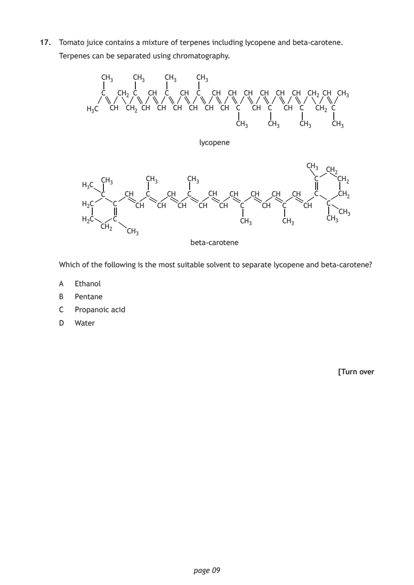
Selectable page text
17. Tomato juice contains a mixture of terpenes including lycopene and beta-carotene.
Terpenes can be separated using chromatography.
CH₃ CH₃ CH₃ CH₃
C CH₂ C CH C CH C CH CH CH CH CH CH CH₂ CH CH₃
H₃C CH CH₂ CH CH CH CH CH CH C CH C CH C CH₂ C
CH₃ CH₃ CH₃ CH₃
lycopene
CH₃
CH₂
CH₃ CH₃ CH₃ C CH₂
H₃C
C CH C CH C CH CH CH CH CH C CH₂
H₂C C CH CH CH CH CH C CH C CH C
CH₃
H₂C C CH₃ CH₃ CH₃
CH₂
CH₃
beta-carotene
Which of the following is the most suitable solvent to separate lycopene and beta-carotene?
A Ethanol
B Pentane
C Propanoic acid
D Water
[Turn over
page 09PDF page 10
Paper 1, Question 18Paper 1, Question 19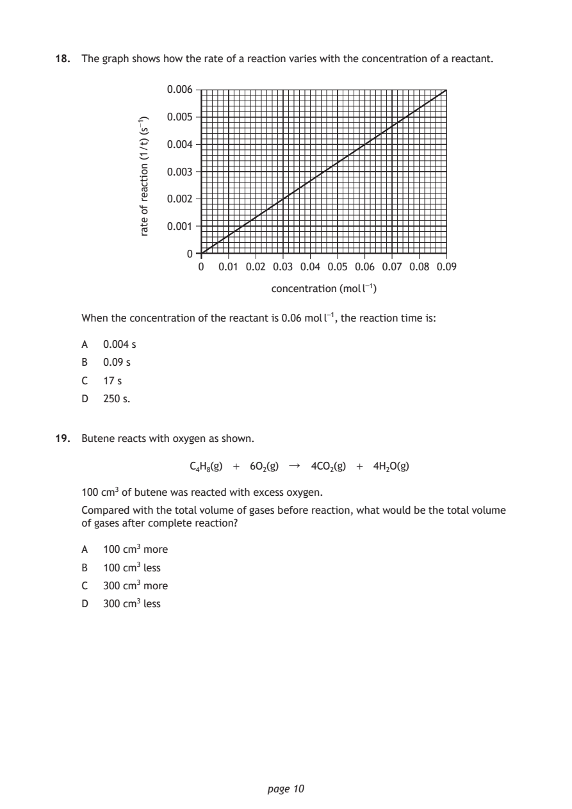
Selectable page text
18. The graph shows how the rate of a reaction varies with the concentration of a reactant.
0.006
0.005
0.004
0.003
0.002
0.001
0
0 0.01 0.02 0.03 0.04 0.05 0.06 0.07 0.08 0.09
concentration (mol l⁻¹)
page 10
)1−s(
)t/1(
noitcaer
fo
etar
When the concentration of the reactant is 0.06 mol l⁻¹, the reaction time is:
A 0.004 s
B 0.09 s
C 17 s
D 250 s.
19. Butene reacts with oxygen as shown.
C₄H₈(g) + 6O₂(g) ↓ 4CO₂(g) + 4H₂O(g)
100 cm³ of butene was reacted with excess oxygen.
Compared with the total volume of gases before reaction, what would be the total volume
of gases after complete reaction?
A 100 cm³ more
B 100 cm³ less
C 300 cm³ more
D 300 cm³ lessPDF page 11
Paper 1, Question 20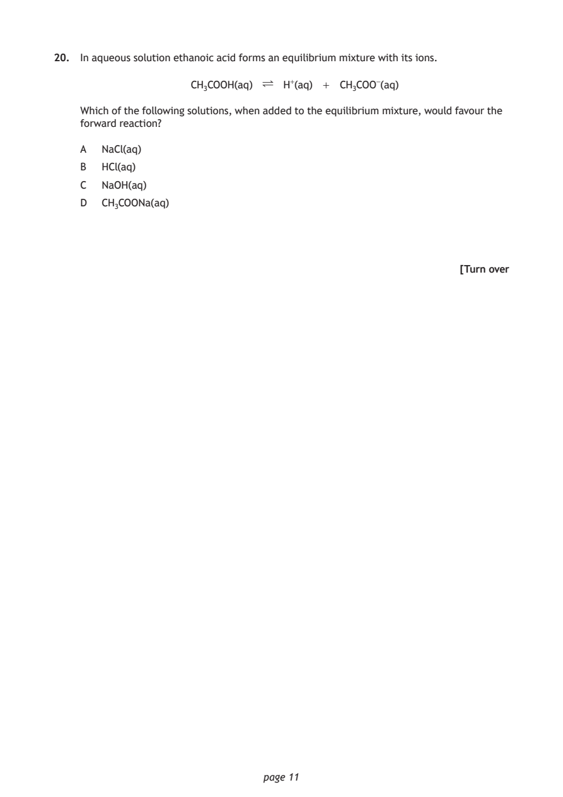
Selectable page text
20. In aqueous solution ethanoic acid forms an equilibrium mixture with its ions.
CH₃COOH(aq) ∏ H⁺(aq) + CH₃COO⁻(aq)
Which of the following solutions, when added to the equilibrium mixture, would favour the
forward reaction?
A NaCl(aq)
B HCl(aq)
C NaOH(aq)
D CH₃COONa(aq)
[Turn over
page 11PDF page 12
Paper 1, Question 21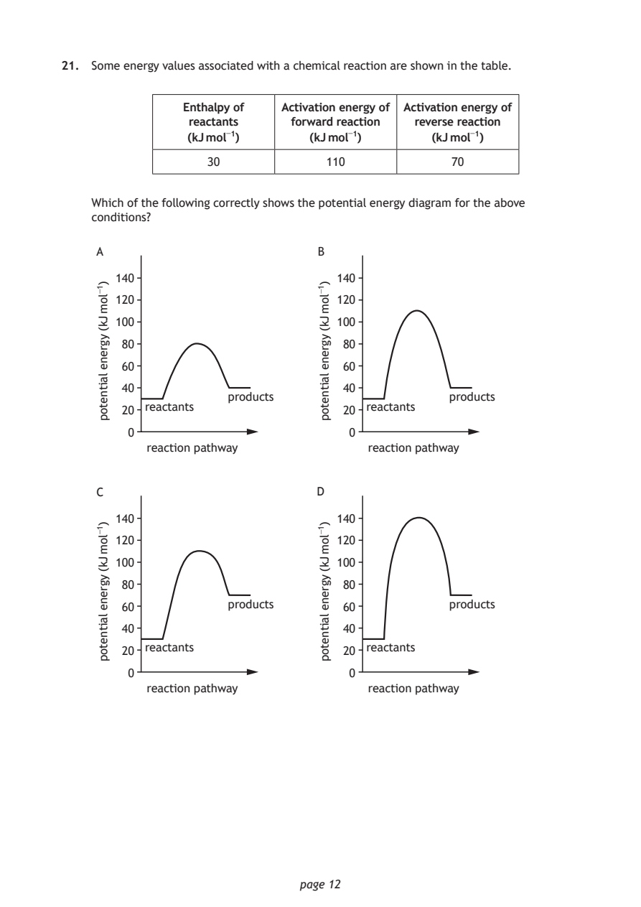
Selectable page text
21. Some energy values associated with a chemical reaction are shown in the table.
Enthalpy of Activation energy of Activation energy of
reactants forward reaction reverse reaction
(kJ mol⁻¹) (kJ mol⁻¹) (kJ mol⁻¹)
30 110 70
Which of the following correctly shows the potential energy diagram for the above
conditions?
140 140
120 120
100 100
80 80
60 60
40 40
20 20
0 0
140 140
120 120
100 100
80 80
60 60
40 40
20 20
0 0
page 12
)1−lom
Jk(
ygrene
laitnetop
)1−lom
Jk(
ygrene
laitnetop
)1−lom
Jk(
ygrene
laitnetop
)1−lom
Jk(
ygrene
laitnetop
A B
products products
reactants reactants
reaction pathway reaction pathway
C D
products products
reactants reactants
reaction pathway reaction pathwayPDF page 13
Paper 1, Question 22Paper 1, Question 23Paper 1, Question 24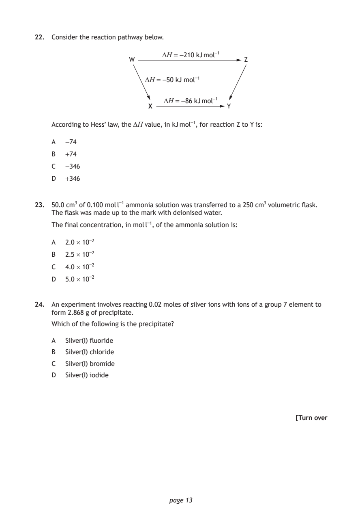
Selectable page text
22. Consider the reaction pathway below.
∆H = −210 kJ mol⁻¹
W Z
∆H = −50 kJ mol⁻¹
∆H = −86 kJ mol⁻¹
X Y
According to Hess’ law, the ∆H value, in kJ mol⁻¹, for reaction Z to Y is:
A −74
B +74
C −346
D +346
23. 50.0 cm³ of 0.100 mol l⁻¹ ammonia solution was transferred to a 250 cm³ volumetric flask.
The flask was made up to the mark with deionised water.
The final concentration, in mol l⁻¹, of the ammonia solution is:
A 2.0 × 10⁻²
B 2.5 × 10⁻²
C 4.0 × 10⁻²
D 5.0 × 10⁻²
24. An experiment involves reacting 0.02 moles of silver ions with ions of a group 7 element to
form 2.868 g of precipitate.
Which of the following is the precipitate?
A Silver(I) fluoride
B Silver(I) chloride
C Silver(I) bromide
D Silver(I) iodide
[Turn over
page 13PDF page 14
Paper 1, Question 25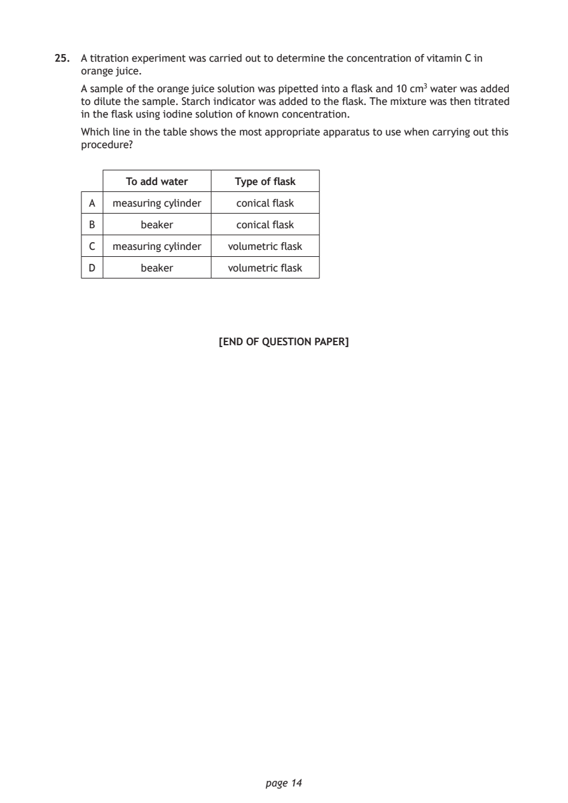
Selectable page text
25. A titration experiment was carried out to determine the concentration of vitamin C in
orange juice.
A sample of the orange juice solution was pipetted into a flask and 10 cm³ water was added
to dilute the sample. Starch indicator was added to the flask. The mixture was then titrated
in the flask using iodine solution of known concentration.
Which line in the table shows the most appropriate apparatus to use when carrying out this
procedure?
To add water Type of flask
A measuring cylinder conical flask
B beaker conical flask
C measuring cylinder volumetric flask
D beaker volumetric flask
[END OF QUESTION PAPER]
page 14PDF page 15

Selectable page text
SPACE FOR ROUGH WORK
page 15PDF page 16
Selectable page text
SPACE FOR ROUGH WORK
page 16